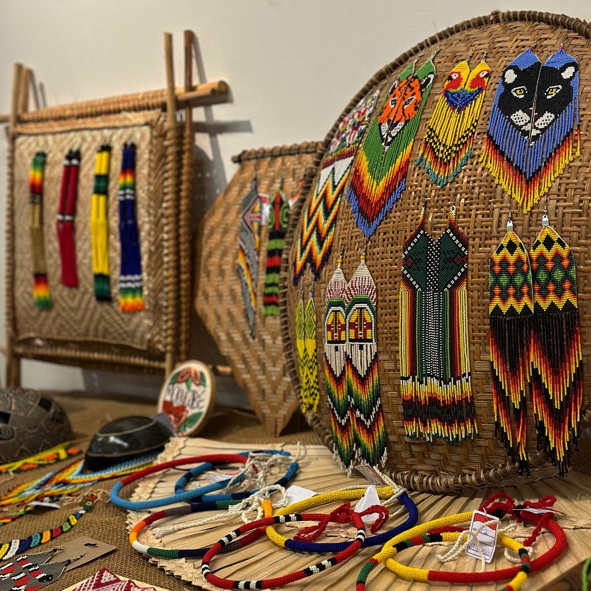

Arte indígena Brasileira
Ancestral
CONTEXTO HISTÓRICO:
Muito antes da chegada dos portugueses, as mulheres indígenas já ocupavam diferentes papéis fundamentais na organização de seus povos. Suas funções variavam de acordo com cada comunidade, envolvendo atividades relacionadas à agricultura, alimentação, cuidado, transmissão de conhecimentos, espiritualidade, relações de parentesco e organização da vida coletiva. Por isso, não é possível falar de uma única experiência de ser mulher indígena, mas de diferentes trajetórias construídas por cada povo.
Durante muito tempo, porém, a historiografia representou essas mulheres a partir de uma perspectiva externa, frequentemente associando-as à passividade ou à submissão. Estudos mais recentes vêm questionando essas interpretações e recuperando sua atuação como agentes históricas, capazes de tomar decisões, estabelecer relações políticas e participar ativamente da construção de suas comunidades.
Atualmente, as mulheres indígenas continuam ocupando espaços de liderança e reivindicando o direito de contar suas próprias histórias. Suas lutas estão relacionadas não apenas à condição feminina, mas também à defesa dos territórios, da ancestralidade, dos conhecimentos tradicionais e da autonomia de seus povos. Assim, compreender sua trajetória histórica significa reconhecê-las não apenas como parte da história indígena, mas como protagonistas na construção, preservação e transformação de suas próprias comunidades.

Na arte:
A produção artística dos povos indígenas no Brasil está profundamente ligada à vida comunitária, à ancestralidade e à relação com a natureza. Muito antes de a arte ser compreendida como uma categoria separada da vida cotidiana, diferentes povos já desenvolviam técnicas e conhecimentos transmitidos entre gerações, presentes na cerâmica, na cestaria, nos tecidos, nos adornos, nos grafismos e na pintura corporal. Nessas sociedades, os objetos não possuem apenas uma função estética: eles podem carregar histórias, identidades, conhecimentos e significados relacionados à organização social e à cosmologia de cada povo.
Em diversas comunidades, as mulheres desempenham um papel fundamental na preservação e transmissão desses conhecimentos. A produção de cerâmicas, grafismos, fibras, tecidos e outros objetos pode estar associada a saberes tradicionalmente transmitidos entre mães, filhas e outras mulheres da comunidade. Registros do Museu Nacional dos Povos Indígenas, por exemplo, documentam mulheres Baniwa produzindo e pintando cerâmicas com grafismos próprios de seu povo.
Historicamente, entretanto, essas produções foram muitas vezes observadas a partir de perspectivas externas aos próprios povos indígenas. Por isso, reconhecer o protagonismo das mulheres indígenas significa também compreender que seus trabalhos não são apenas manifestações artesanais ou decorativas, mas formas de conhecimento, memória e resistência cultural.
Artistas:
Referência bibliográfica:
ELIAS, Kauane. Renascimento: características, contexto histórico e influências. Estratégia Vestibulares, 8 nov. 2022. Disponível em: vestibulares.estrategia.com/portal/materias/historia/caracteristicas-do-renascimento.
SMARTHISTORY. Female artists in the Renaissance. Smarthistory, [s. d.]. Disponível em: smarthistory.org/female-artists-renaissance.